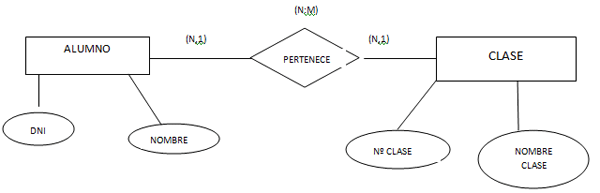

Una Base de Datos (BD) sirve para almacenar, organizar y administrar información de forma estructurada. Permite guardar grandes cantidades de datos y acceder a ellos de manera rápida y segura. Las bases de datos se utilizan en muchos lugares como bancos, hospitales, empresas, colegios y páginas web para guardar información de clientes, productos, estudiantes o transacciones.
CRUD es un conjunto de operaciones básicas que se utilizan para manejar la información dentro de una base de datos. Estas operaciones permiten crear nuevos datos, consultar la información existente, modificar datos guardados y eliminar información cuando ya no es necesaria. CRUD es fundamental en la mayoría de los sistemas informáticos que trabajan con bases de datos.
C – Create (Crear)
R – Read (Leer)
U – Update (Actualizar)
D – Delete (Eliminar)
Un campo es una parte de una tabla en una base de datos donde se guarda un tipo específico de información. Cada campo tiene un nombre y almacena un tipo de dato determinado, como texto, números o fechas. Por ejemplo, en una tabla de estudiantes pueden existir campos como nombre, edad, correo electrónico y número de identificación.
Un registro es un conjunto de campos relacionados que contienen toda la información de un elemento dentro de una tabla. Por ejemplo, en una tabla de estudiantes, un registro incluiría todos los datos de un estudiante específico, como su nombre, edad, dirección y correo electrónico.
Un dato es la unidad más pequeña de información que se puede almacenar en una base de datos. Representa un valor específico dentro de un campo, como un nombre, un número, una fecha o una dirección. Los datos permiten que la información pueda ser guardada, procesada y utilizada en diferentes sistemas.
Un Diagrama Entidad-Relación (DER) es una representación gráfica que se utiliza para mostrar cómo se organiza la información dentro de una base de datos. En este diagrama se representan las entidades (como estudiantes, profesores o productos), sus atributos (campos) y las relaciones que existen entre ellas. Este tipo de diagrama ayuda a planificar y diseñar la estructura de una base de datos antes de crearla en un sistema.

Un ejemplo básico de un Diagrama Entidad-Relación (DER) puede ser el de un sistema escolar. En este caso existen dos entidades principales: Estudiante y Curso. La entidad Estudiante puede tener campos como ID, nombre y edad, mientras que la entidad Curso puede tener ID del curso y nombre del curso. La relación entre ellas puede llamarse inscripción, ya que un estudiante puede inscribirse en uno o varios cursos. Este diagrama ayuda a visualizar cómo se relacionan los datos antes de crear la base de datos, mostrando las entidades, sus atributos y la relación que existe entre ellas.